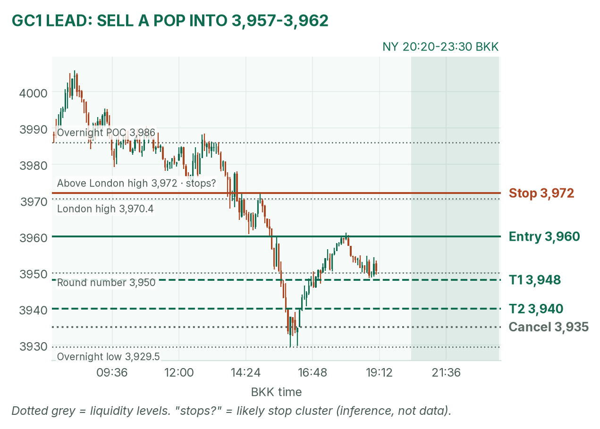
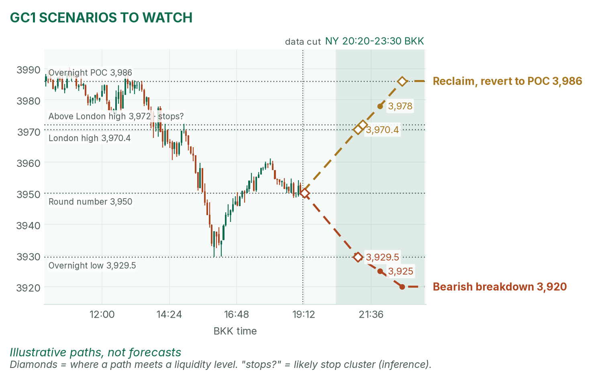
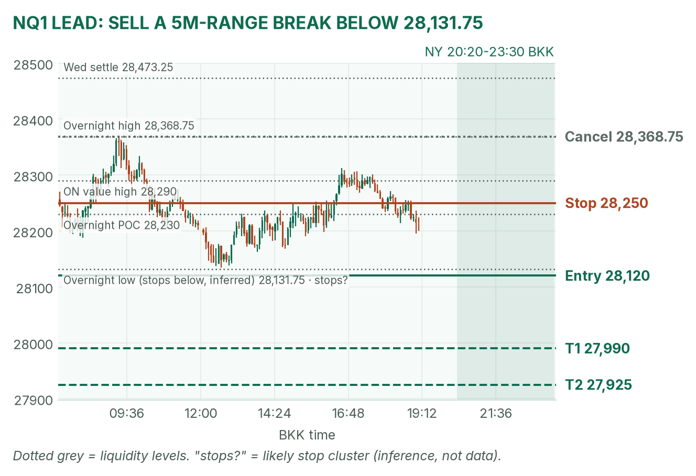
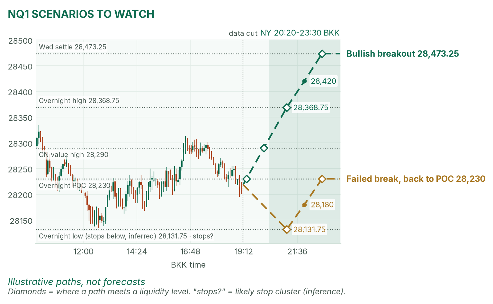

Claims at 20:30, Nvidia's board on the wire. Sell strength in both.
Window 20:20–23:30 BKK (US winter time). Data cut 19:10 BKK: GC 3,950.5, NQ 28,218.50 (completed 5-minute bars). Backup data today: TopstepX login failed, so levels come from Yahoo Finance Dec futures bars. Levels only, flat by 23:30. Ideas, not advice. April's pre-NY brief (~19:00 BKK) was read.
Summary
GC: sell a pop into 3,957–3,962, stop 3,972, targets 3,948 and 3,940. About 35% once filled.
NQ: sell a break below 28,131.75, entry 28,120, stop 28,250, targets 27,990 and 27,925. About 35%.
Four no-trade zones: 20:25–20:32 (claims), 21:25–21:32 (stock open), 21:55–22:02 (Barr, home sales), 23:10–23:17 (Goolsbee).
The market story
Bonds reopen today after Veterans Day, and the 2-year yield jumped 3.8 basis points to 4.765%, per April. That's the December hike bet: about 89% for a quarter point and 11% for a half point (CME FedWatch via CNBC). Higher yields hurt gold, which pays no interest: it fell from 4,005.9 to 3,929.5, then bounced.
Nasdaq has a different problem: Nvidia's board still hasn't ruled on Jensen Huang, and the stock is down 7.44% premarket. That's key-person risk (a company's value hanging on one leader). Remember priced-in: the hike is mostly priced, so only a surprise in claims moves gold; the Nvidia news can land any minute and gap NQ through either edge.My bias: bearish gold, soft Nasdaq.
News (BKK)
Time
Event
Forecast
Prior
Read
20:30
Weekly jobless claims
194K
189K
Hot (under ~190K, a strong job market): gold lower. Cold (over ~200K): gold bounce, NQ relief.
21:00
Cleveland Fed's Hammack
–
–
Hawkish words add to gold pressure.
21:30
US cash stock open
–
–
NQ's 5-minute range forms.
22:00
Fed's Barr; home sales
–
–
Second-tier.
23:15
Chicago Fed's Goolsbee
–
–
Late in the window.
Nvidia news has no set time. Source: April's brief (Investing.com, InvestingLive, MyPivots).
Levels to watch
Level
GC
NQ
Wednesday settle
4,000.5
28,473.25
Overnight high (since 06:00)
4,005.9
28,368.75
Overnight POC
3,986
28,230
London high (since 15:00)
3,970.4
28,312.75
Overnight value area
3,935–4,000
28,200–28,290
Overnight low
3,929.5
28,131.75
Wednesday high / low
4,074.7 / 3,989.6
28,697.00 / 27,856.00
Expected NY range (3-session median)
about 60 points
about 500 points
Gold (GC1)
Bias: bearish. Gold made lower highs all day and is pinned under the 3,970.4 London high. The 3,986 POC (the busiest price) is far above, so the overnight value area (where 70% of volume traded) is unusually wide. The NY rule fades the COMEX range; today that means selling the pop, not buying the dip.
The trade: sell the pop
Entry
3,957–3,962 (plan 3,960), after 20:32, on a bounce that stalls under the 3,970.4 London high
Stop
3,972, above the London high, where buyers' stops likely sit (inference)
Targets
1R partial 3,948 · T2 3,940 (1.67R)
Cancel
Trades below 3,935 before the fill, a 5m close above 3,970.4, or no fill by 22:30
Probability
~35%, an estimate. Basis: GC NY opening ranges mostly failed and reverted in my 42-session study (not statistically significant); the 20-point target is a third of the typical range.
A cold claims print can squeeze gold through 3,970.4; then there's no short. April agrees: "gold pays for the Fed," and a hot print "would add to gold's pressure."

GC 5-minute bars into 19:10. Lower highs since 08:15.

Illustrative paths, not forecasts.
Scenarios to watch
Bearish breakdown: a 5m close below 3,929.5, the overnight low. Aims for about 3,920, the low end of the typical range.
Mean reversion: a 15m close back above 3,970.4. Aims for the 3,986 POC.
Nasdaq (NQ1)
Bias: soft. NQ is down about 0.9% and back at its 28,230 POC, in the middle of the overnight range. The NY rule: trade breakouts of the 21:30–21:35 range. Use VWAP (the volume-weighted average price) as a filter only after about 22:00: stay short only below it.
The trade: bearish range breakdown
Entry
Sell stop 28,120, below the 28,131.75 overnight low, after 21:32. Only if the 21:30–21:35 range low sits above 28,120, so the break clears both.
5m close above 28,368.75 before entry, or no break by 22:30
Probability
~35%, an estimate. Basis: NQ 5-minute breakouts averaged +0.37R over 31 sessions (not significant); the 195-point target is under half the typical 500-point range.
Why: buyers' stops likely sit under 28,131.75 (my inference). A board headline can gap NQ past the stop; if it lands before entry, stand aside. April is neutral: either edge can break.

NQ 5-minute bars into 19:10. Slipping back to the POC.

Illustrative paths, not forecasts.
Scenarios to watch
Bullish breakout: a 5m close above 28,368.75. Aims for 28,473.25, Wednesday's settle.
Mean reversion: a break below 28,131.75 that closes back above it. Aims for the 28,230 POC.
6E (not traded): mid-range between 1.10805 and 1.11165.
Before you click
ORB bases. GC NY: 20:20 COMEX open until a 2-minute candle's volume drops below half the first two's average, fade to POC. NQ NY: 21:30–21:35 range, trade breakouts. GC and 6E London: 15:00–15:30 range (fade gold, break the euro).
Checklist. 1) Room to today's max loss? 2) Within daily rules? 3) No release within 30 minutes? 4) Agrees with the bias? 5) At a marked level? 6) Setup tagged? 7) Entry, stop, 1R partial, target set? 8) Calm, not chasing?
Reset (60 seconds). Hands off the mouse. Breathe in 4, hold 4, out 6, five times. Name the feeling in one word. "Eager" or "frustrated"? Wait 5 minutes.